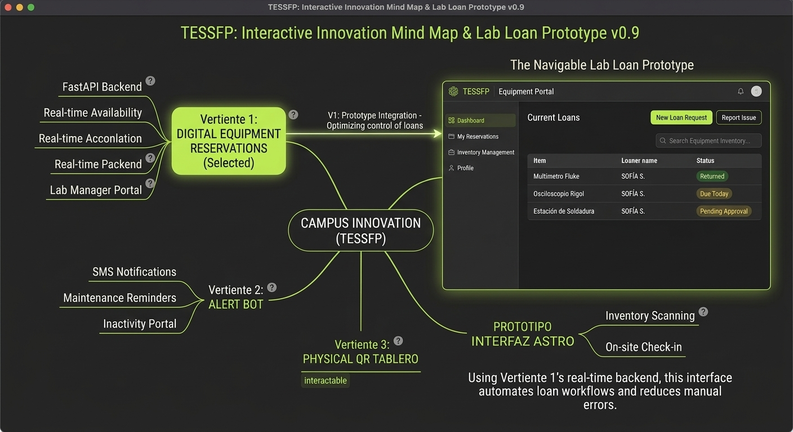
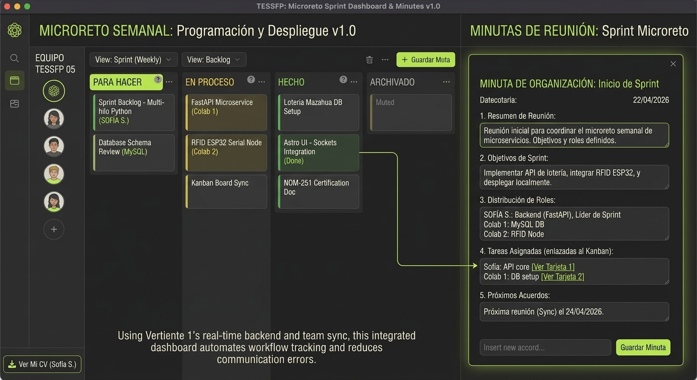

Personal y Social
Creatividad, Liderazgo y Trabajo en equipo.
Creatividad

Mapa mental interactivo con tres vertientes de innovación en el campus y prototipo digital navegable enfocado en optimizar el control de préstamos de equipo en laboratorios del TESSFP.
- Problema detectado: Filas y demora en registros manuales de equipos.
- Solución prototipada: Sistema de reservas digitales con interfaz moderna en Astro y Tailwind CSS.
"Esta propuesta aporta valor directo al optimizar el tiempo de los alumnos en el plantel, eliminando filas y garantizando que los recursos tecnológicos estén organizados cuando los laboratorios se utilizan."
Liderazgo y trabajo en equipo

Tablero Kanban digital y minuta de equipo para la organización y seguimiento del microreto semanal de programación y despliegue de microservicios.
- Organización: Distribución estratégica de roles en backend (FastAPI) y bases de datos (MySQL).
- Seguimiento: Monitoreo de tareas mediante tablero y acuerdos de equipo documentados.
"Favorecí la colaboración mediante la escucha activa, estableciendo entregables diarios claros y dividiendo los requerimientos en tareas pequeñas para que cada integrante aportara al proyecto de forma fluida."